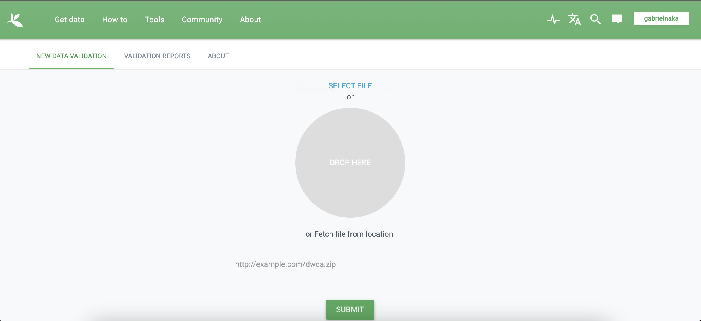

Se você ainda não passou pela seção de metadados usando o pacote EML, volte um pouco, por favor. Lá apresento uma introdução geral sobre metadados em XML e como montá-los usando o pacote EML no R. Aqui abordarei especificamente como montar arquivos com metadados para dados de biodiversidade (ocorrência, lista de espécies, pontos etc).
Esta seção é baseada no documento produzido pelo Living Norway Project, que também oferece uma introdução muito interessante sobre Darwin Core e metadados para biodiversidade.
O melhor exemplo de esturutura digital que utiliza metadados de biodiversidade construídos desta maneira que mostrarei é o GBIF.
{LivingNorwayR}Primeiro vamos instalar o pacote
Aqui os dados que serão utilizados no exemplo. Estes são os mesmos dados utilizados no tuturial do Living Norway R. Para mais detalhes visite a página deles.
Vamos utilizar um conjunto de dados que fizemos o download e está dentro da nossa pasta do curso para criar nosso arquivo Darwin Core.
# Lendo o arquivo core
TOVEEventTableDF <- read.table(here::here("data", "TOVEData", "event.txt"), sep = "\t", header = TRUE)
head(TOVEEventTableDF)Obtendo os arquivos extendidos, neste caso o arquivo de ocorrência de espécies. Podemos ver que se trata de um simples data frame onde os nomes das colunas seguem os códigos do Darwin Core
Agora que temos nossos dados podemos construir um arquivo do tipo Darwin Core
Primeiro precisamos definir o que será a tabela core e o que serão as suas extensões, que por sua vez podem ser mapeadas a partir de atributos comuns presentes em ambas as tabelas (neste caso o ID).
# 1. Inicializando automaticamente - só funciona caso os nomes já estejam de acordo com o Darwin Core
newTOVEEventTable <- initializeGBIFEvent(TOVEEventTableDF, "id", nameAutoMap = TRUE)
# 2. Iniciando manualmente - podemos usar o nome dos atributos que correspondem a cada categoria do Darwin Core.
# podemos usar o nome ou o número da coluna
newTOVEEventTable <- initializeGBIFEvent(TOVEEventTableDF, "id",
type = "type",
modified = "modified",
datasetName = "datasetName",
ownerInstitutionCode = "ownerInstitutionCode",
informationWithheld = "informationWithheld",
dataGeneralizations = "dataGeneralizations",
eventID = "eventID",
samplingProtocol = "samplingProtocol",
sampleSizeValue = "sampleSizeValue",
sampleSizeUnit = "sampleSizeUnit",
samplingEffort = "samplingEffort",
eventDate = "eventDate",
eventTime = "eventTime",
year = "year",
month = "month",
day = "day",
locationID = "locationID",
country = "country",
countryCode = "countryCode",
stateProvince = "stateProvince",
municipality = "municipality",
locality = "locality",
minimumElevationInMeters = "minimumElevationInMeters",
maximumElevationInMeters = "maximumElevationInMeters",
decimalLatitude = "decimalLatitude",
decimalLongitude = "decimalLongitude",
geodeticDatum = "geodeticDatum",
coordinateUncertaintyInMeters = "coordinateUncertaintyInMeters")
# Podemos checar se o mapeamento dos termos se deu corretamente
newTOVEEventTable$getTermMapping()Neste caso a tabela a extensão que temos da tabela chave é a tabela de ocorrência de espécies. Vamos mapear ela da mesma forma que fizemos para a tabela core
O último elemento que precisamos para construir nossos metadados para
os arquivos de biodiversidade que estamos utilizando é o arquivo EML,
que vocês já conhecem. O EML pode ser criado de várias formas. Vimos
anteriormente como criar um EML usando o pacote {EML}. O
pacote {LivingNorwayR} oferece uma maneira simples de criar
um arquivo XML usando um arquivo .Rmd, ou seja, usando o
Rmarkdown. Vamos entender os detalhes de um arquivo do tipo Rmd mais
adiante, por hora precisamos apenas saber que ele é um arquivo que
permite mesclar textos e códigos, além de possibilitar criar tags para
seções (Como os títulos num documento Word). Essas tags são utilizadas
pelas funções do LivingNorwayR para criar o arquivo XML. Vale notar que
isso é mais limitante que criar um XML usando o EML, mas para questões
didáticas vamos usar um arquivo .Rmd pronto, que está na pasta de dados
deste diretório.
createdTOVEMetadata <- initializeDwCMetadata(fileLocation = here::here("data", "TOVEData", "LNWorkshopExample_Metadata.rmd"), fileType = "rmarkdown")
# Exportando o EML
createdTOVEMetadata$exportToEML(file.path(here::here("data", "TOVEData"), "newMetadata.xml"))Este novo metadado precisa ser lido para o R e assim podemos juntá-lo com os outros arquivos
Agora temos os arquivos necessários para juntar em um único arquivo zipado que pode ser guardado localmente ou submetido em alguma plataforma de dados, por exemplo, GBIF, como ilustrado abaixo

Para juntar todos os arquivos criados precisamos usar a seguinte função
# criando um único arquivo com todos os objetos criados anteriormente
newTOVEArchive <- initializeDwCArchive(newTOVEEventTable, list(newTOVEOccTable), newTOVEMetadata)Para salvar o objeto .zip, que agora é nosso Darwin Core Archive, podemos fazer o seguinte
Uma vez criado o arquivo no formato Darwin Core Archive podemos fazer o caminho inverso e obter as tabelas a partir do arquivo que criamos.
Para tanto podemos usar as funções do pacote LivingNorwayR para ler o arquivo zip e extrair as tabelas, incluindo os metadados.
localDataLoc2 <- file.path(here::here("data", "NEWTOVEData"), "newDwCArchive.zip")
NEWTOVEArchive <- initializeDwCArchive(localDataLoc2, "UTF-8")Podemos agora explorar os dados dentro do arquivo Darwin Core criado nos passos anteriores. Ou seja, podemos retomar os dados e importar para dentro do R para fazer, por exemplo, novas análises
# obtendo o dado
NEWTOVEEventTable <- NEWTOVEArchive$getCoreTable()
class(NEWTOVEEventTable)
# Podemos exportar como um dataframe
NEWTOVEEventTableDF <- NEWTOVEEventTable$exportAsDataFrame()
# obtendo dados da tabela extendida
NEWTOVEEventTableDF <- NEWTOVEEventTable$exportAsDataFrame()
# exportando como dataframe
head(NEWTOVEEventTableDF)